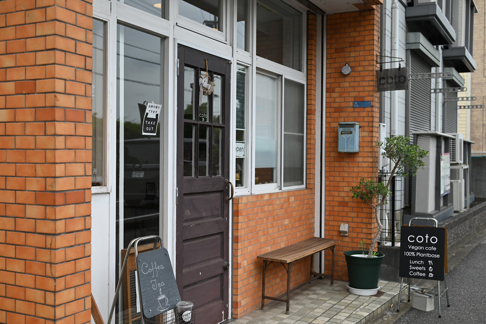

coto の店内やお食事、スイーツの様子を写真でご紹介します。写真下のクレジット表記より、投稿元のGoogleマップ情報もご確認いただけます。
自然光が差し込む店内
Photo: Terra Mid（Google マップ）
グルテンフリーマフィンとアイスコーヒー
Photo: coto（Google マップ）
土鍋炊き玄米ごはんのワンプレート
Photo: Emi K（Google マップ）

レンガと木のドアが目印の外観
Photo: あすも（Google マップ）
大豆ミートを使ったお料理
Photo: mari（Google マップ）
季節を感じるグルテンフリースイーツ